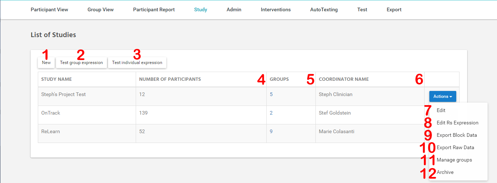

Study¶
List of studies¶
Страница содержащая список всех активных Study, а также элементы управления ими.
{kind=link}
Figure_13 - List of studies Page Interface
- Описание List of studies Page Interface:
- ссылка для перехода на страницу создания новой Study
- ссылка для перехода на страницу тестирования Group Expression (LINK!)
- ссылка для перехода на страницу тестирования Individual Expression (LINK!)
- количество активных participants во всех Study Group выбранной study
- количество групп в этом study, так же является ссылкой на страницу управления Study Group
- имя координатора Study
- ссылка на страницу редактирования Study
- ссылка на страницу редактирования Reward Score Expression для данной Study
- экспорт block data для данной study
- экспорт raw data для данной study
- ссылка на страницу управления Study Group
- архивирование выбранной study

Figure_14 - Create|Update Study Page Interface
- Описание Create|Update Study Page Interface:
- название study
- координатор study
- константа использующаяся для обработки данных на странице study coordinator view(LINK!)
- константа доступная для использования в rs expression ([DW])
- константа доступная для использования в rs expression ([MCAL]), также используеся при расчета cal frec на странице study coordinator view(LINK!)
- константы являющиеся множителями для соответсвущих целей при расчете RS, доступны для использования в rs expression(LINK!) как Outcome Variables, в случае если значение не указано считается равным нулю
- как минимум одно из этих значений должно быть указано
- цели, так же используются при расчете RS, также отображаются на странице study coordinator view(LINK!) и странице group view(LINK!) для тех у кого не установлены индивидуальные цели
- список уже добавленных интервеншенов, Cost – константа используемая в Optimazed Expression(LINK!), Time – время которое отводится на аждый интервеншен данного типа. Из этого списка так же производится удаление типов.
- добавление типа интервеншена который будет использоваться для данной study
- Выбор типа Study Algorithm, который доступен для использования в расчете RS ([SAS] или [SAM])
Groups¶
Страница для управления группами стади.

Figure_15 - Groups Page Inteface
- Описание - Groups Page Inteface:
- ссылка на страницу создания новой Study Group
- колонка таблицы с названием группы, также является ссылкой на страницу group view для данный Study Group
- тип Study Group, определяет способ оптимизации Intervention
- количество Participant состоящих в группе
- имя координатора группы, также отобращается как клиницист для партиципантов состоящих в группе
- редактирование данной Study Group
- экспорт списка Participant данной Study Group
- ссылка на страницу редактирования expression оптимизации для данного типа группы,
- еще одна ссылка на group view для данный Study Group
Study Group Add|Update Page
На данной странице производится управление членами группы, редактирование основных параметров группы, а так же управление рассписанием для данной группы.
Активное рассписание подразумевает то что для этой группы интервеншены будут создаваться со смещением по времени таким образом чтобы не допустить пересещение времени отведенного для данной группы (max time), а также создание особых автоматичеси генерируеммых текстов (notification) для предварительного уведомления партиципанта о предстоящем интервеншене.
В случае если рассписание не активно интервеншены будут создаваться в соотвестсвии с временем указанным в Intervention setup данного партиципанта, даже если установлено одно время для всех. Нотификации создаваться не будут.

Figure_16 - Study Group Add|Update Page Interface
- Описание Study Group Add|Update Page Interface:
- название Study Group
- тип Study Group
- время в минутах, используемое в Group Optimization для ограничения суммарного времени всех интервеншенов которые будут созданы для этой Study Group
- координатор исследования, также отображается как Clinician для Participants являющихся членами Study Group
- эллемент для включения Participant в Study Group
- эллемент для управление использованием расписания Clinician
- Notification Message Template
- время отправки нотификации для Participants
- данные которые могут быть использованы в Notification Message Template (сюда так же могут быть включены практически любые другие данные)
Note
Message Template – это значит что этот текст является заготовой для сообщения. Message Template имеет специальные метки ({1} - например) в которые будут подставлены подготовленные для него значения. Данные значения выбираются индивидуально для каждого пользователя.